Nuestro compromiso es su salud · Licencia Sanitaria vigente · Certificados de Fumigación válidos ante COFEPRIS · REPSE activo


Si tu negocio opera en el sector alimentario, hospitalario, hotelero o cualquier industria regulada, la autoridad sanitaria puede exigirte en cualquier momento un Certificado de Fumigación válido. Para nosotros no se trata solo de cumplir un trámite — vemos un posible problema de salud para tus colaboradores y clientes.
Solo las empresas con Licencia Sanitaria expedida por COFEPRIS pueden emitir ese certificado con validez oficial. Obtenerla exige un Responsable Sanitario certificado, instalaciones físicas verificadas y auditorías periódicas — no cualquier fumigadora la tiene. La mayoría de empresas en Mexicali no cuenta con ella.
Baja Control de Plagas cuenta con Licencia Sanitaria vigente y REPSE activo. Nunca aplicamos sin inspeccionar primero — cada intervención inicia con una visita técnica presencial para conocer el problema real antes de proponer solución.
Diseñamos programas de fumigación periódica adaptados al giro y horarios de cada empresa.
Cumplimiento sanitario obligatorio. Evita clausuras y multas. Certificado incluido en cada servicio.
Programa de fumigaciones periódicas adaptado a turnos de producción sin interrumpir operaciones.
Chinches, cucarachas y roedores son riesgo directo a tu reputación. Intervención discreta y eficaz.
Ambientes de trabajo libres de plagas. Aplicación en horarios nocturnos o de fin de semana.
Mantenimiento preventivo para áreas comunes, locales de alimentos y bodegas de servicios.
Control de roedores e insectos rastreros que dañan mercancía, empaques e instalaciones eléctricas.
Atendemos instituciones gubernamentales con toda la documentación oficial requerida: Licencia Sanitaria, REPSE vigente y certificado de fumigación con validez ante auditorías.
Todos incluyen inspección previa, certificado de fumigación, bitácora firmada y recomendaciones escritas de post-servicio.
Nuestro servicio estrella. Garantía de 5 años con 2 revisiones trimestrales incluidas. Protege la estructura de tu inmueble con documentación completa.
Ver servicio →Tratamiento dirigido en habitaciones de hotel y áreas de descanso. Sin necesidad de desechar colchones.
Ver servicio →Gel cebo más aspersión en cocinas industriales, comedores y bodegas. Sin olor fuerte. Resultados desde el primer día.
Ver servicio →Estaciones de cebo estratégicas en perímetro e interior. Programa de monitoreo mensual disponible.
Ver servicio →Desde la reforma a la Ley Federal del Trabajo de 2021, toda empresa que contrate servicios especializados externos está obligada a verificar que su proveedor cuente con Registro de Prestadoras de Servicios Especializados (REPSE) vigente ante la STPS.
Si contratas una fumigadora sin REPSE, tu empresa puede ser corresponsable de las obligaciones laborales y fiscales de ese proveedor ante el IMSS e INFONAVIT.
Esta certificación va más allá del control básico de plagas. Nuestro personal ha sido evaluado y certificado en procedimientos de MIP enfocados en inocuidad alimentaria — lo que significa que sabemos cómo eliminar plagas en entornos donde la seguridad del alimento es crítica, sin comprometer la operación ni la cadena productiva.
Para los negocios de la industria alimentaria, esto representa una capa adicional de protección: no solo cumples con la normativa sanitaria básica, sino que puedes demostrar que tu fumigadora trabaja bajo los estándares de inocuidad que exigen las certificaciones de calidad y las auditorías más exigentes.
MIP EN GRADO DE INOCUIDAD
Personal evaluado y certificado en procedimientos de control de plagas enfocados en seguridad alimentaria
¿Tu empresa está en la industria alimentaria?
Contáctanos para una evaluación gratuita de tu riesgo sanitario.
Solicitar evaluaciónNos llamas o escribes. Te hacemos una pequeña encuesta para entender el problema, el tipo de inmueble y el sector de tu empresa.
Agendamos una visita técnica a tus instalaciones. Nunca aplicamos sin inspeccionar primero — identificamos focos de riesgo, tipo de plaga y nivel de infestación.
Presentamos una cotización clara y explicamos la metodología a usar, adaptada a tus horarios y giro comercial. Sin compromisos.
Fumigación con productos COFEPRIS en la fecha y hora acordadas. El Responsable Sanitario supervisa y documenta cada paso.
Entregamos el Certificado de Fumigación con validez oficial, bitácora firmada e instrucciones escritas de post-servicio: tiempo de reventada, uso de guardapolvos y sellado de grietas.
Agendamos revisiones periódicas cuando el caso lo requiere: programas de mantenimiento mensual, bimestral o trimestral según el giro y riesgo sanitario.
Es un documento oficial expedido por una empresa con Licencia Sanitaria vigente que certifica que tus instalaciones fueron fumigadas con productos y procedimientos autorizados por COFEPRIS. Las autoridades sanitarias lo solicitan en inspecciones a restaurantes, cocinas, hoteles, clínicas y cualquier establecimiento que maneje alimentos o atienda al público.
No. Solo las empresas con Licencia Sanitaria otorgada por la Secretaría de Salud pueden emitir certificados con validez oficial. Obtenerla requiere Responsable Sanitario certificado, instalaciones físicas inspeccionadas y cumplir requisitos técnicos y administrativos estrictos. La mayoría de fumigadoras de Mexicali no la tienen. Baja Control de Plagas sí cuenta con Licencia Sanitaria vigente.
Dependiendo del giro, las consecuencias pueden incluir multas económicas significativas, clausura temporal del establecimiento y daño reputacional. En el sector alimentario, la ausencia de control de plagas documentado es motivo suficiente para una suspensión de actividades por parte de COFEPRIS o la autoridad municipal de Mexicali.
El REPSE (Registro de Prestadoras de Servicios Especializados) es un registro obligatorio ante la STPS para empresas que prestan servicios especializados. Desde la reforma laboral de 2021, si contratas un proveedor sin REPSE vigente, tu empresa puede ser corresponsable de sus obligaciones patronales. Baja Control de Plagas tiene REPSE vigente y puedes verificarlo en el portal oficial de la STPS.
Depende del giro y el nivel de riesgo. Los restaurantes y cocinas industriales generalmente requieren fumigación mensual o bimestral. Oficinas y bodegas pueden manejarse trimestralmente. Hoteles suelen tener programas mensuales. Al evaluar tu negocio te damos una recomendación específica y un programa de mantenimiento preventivo.
Sí. Todos nuestros productos están registrados y aprobados por COFEPRIS. Respetamos los tiempos de re-entrada establecidos en las fichas técnicas de cada producto. Para negocios de alimentos usamos formulaciones de muy baja toxicidad residual y sin olor persistente. Te indicamos exactamente cuánto tiempo debe permanecer cerrada el área tratada antes de reanudar operaciones.
Llámanos hoy. Evaluamos tu caso, te damos un precio exacto y agendamos el servicio. Sin rodeos, sin compromiso.